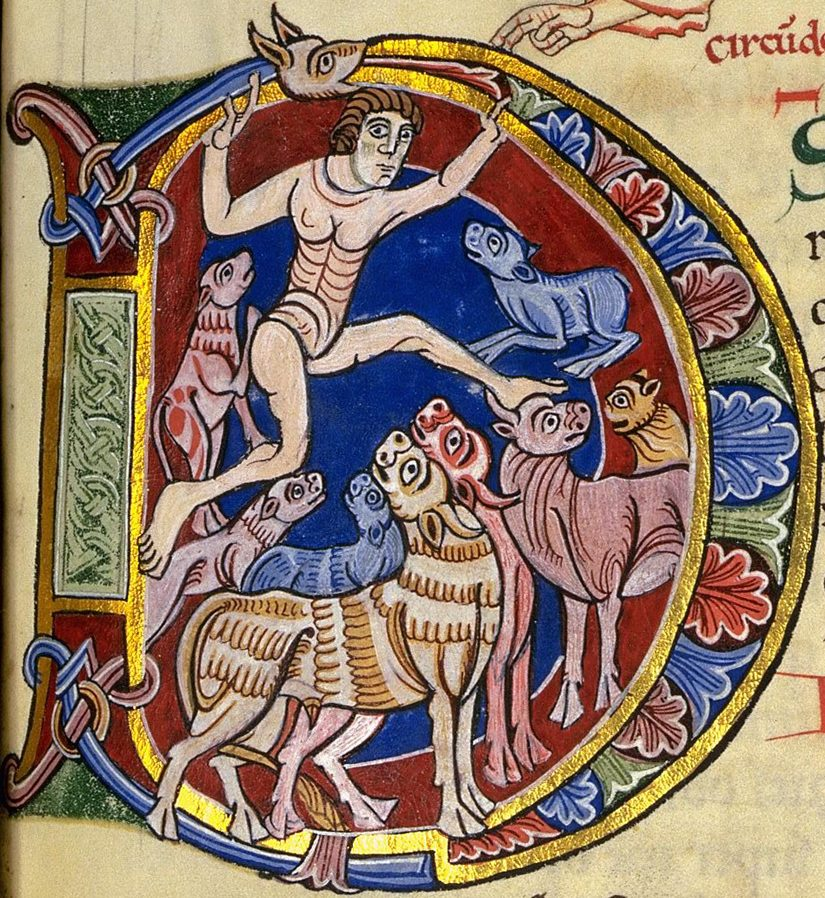

Psalm 22 — The Mister Translation

Psalm 22:13–17. The Latin Bibles number this psalm 21, and its first words, Deus, Deus meus, respice in me, are the ones this capital opens. The beasts are the bulls, the dogs and the lion of the psalm; the Commons file describes the initial and does not say which verse the artist had in mind.
.jpg){kind=link}
Translator's Notes — verse by verse
The heading, and why every verse here is one ahead of an English Bible. “For the director. On ‘The Hind of the Dawn’. A psalm of David” is verse 1 in the Hebrew, so the cry “My God, my God” is verse 2 here and 22:1 in an English Bible, as in Psalm 34 (now on these pages). The older pages of this site that quote “Psalm 22:18” or “22:21” use the English count, and the Hebrew count is 22:19 and 22:22. Ayyelet ha-shachar is “the hind of the dawn”. Rashi gives two readings: the name of a musical instrument, or Israel, the beloved hind who looks forth like the dawn (Song 6:10), and he adds that the Sages applied it to Esther (Megillah 15b). Radak lists these and more: an instrument; a psalm sung at first light, from eyaluti, “my strength”, in verse 20; the morning star; Esther, and Israel in exile; and David fleeing Saul. Ibn Ezra rejects the instrument and takes it as the opening words of a love song, “a loving hind” (Proverbs 5:19). The NWT 1984 has “the Hind of the Dawn”. The Greek heading has “for the morning help” (hyper tēs antilēpseōs tēs heōthinēs), and the Douay follows it with “for the morning protection”; antilēpsis is also the Greek’s word for “my help” in verse 20.
⭐ “My God, my God, why have you forsaken me”. “My God, my God” (Eli, Eli) stands in one verse of the Hebrew Bible, and “you have forsaken me” (azavtani) stands in two verses: here, and Deuteronomy 28:20 (now on these pages), where God says it of Israel. The cry is the one Matthew and Mark put on Jesus’ lips from the cross, Matthew with the Hebrew address, “Eli, Eli”, and Mark with the Aramaic one, “Eloi, Eloi” (Matthew 27:46 and Mark 15:34, both now on these pages). Rashi says Israel is destined to go into exile, and David said this prayer for that future. Radak hears the doubled address as the way people call out, as in “Abraham, Abraham” and “Moses, Moses”, and reads the singular “me” as all Israel, one man in exile. The KJV and the ASV have “why hast thou forsaken me”, the NIV “why have you forsaken me”, and the NWT 1984 “why have you left me?” The Greek Psalter has “My God, my God, attend to me; why have you forsaken me?”, with an extra “attend to me” that Matthew’s Greek does not carry.
⚠ “Far from my salvation, the words of my roaring”. The Hebrew has no verb and no question mark after “forsaken me”: rachoq mi-yeshu‘ati, divrei sha’agati, “far from my salvation, the words of my roaring”. The KJV has “the words of my roaring”, the ASV “the words of my groaning”, the NIV “my cries of anguish”, the TLB “my groans”, and the NWT 1984 “the words of my roaring”. The noun sha’agah is from the verb for a lion’s roar, the very verb used of the lion in verse 14, sho’eg (dictionary). The Greek reads “the words of my transgressions”, and the Douay follows it with “the words of my sins”. Radak reads the line as a second question: why are you far from my salvation, when you hear the words of my roaring?
⭐ “And there is no silence for me”. “I call by day, and you do not answer; and by night, and there is no silence for me.” The word is dumiyyah, written dumiyyah with a vav in Psalm 39:3 and 62:2 and here without it. The Hebrew does not say whose silence is meant. The KJV and the ASV have “and am not silent”, the NIV “I find no rest”, the NWT 1984 “there is no silence on my part”, the Geneva “have no audience”, and the Douay “it shall not be reputed as folly in me”, after the Greek ouk eis anoian, “not for folly”. Radak takes dumiyyah as a noun, a cessation, and reads: there is no ceasing from my cry; Ibn Ezra reads it as a refusal to be quiet for a single moment. The verb that is refused, ta‘aneh, “you answer”, returns at verse 22 as ‘anitani, “you have answered me”.
⭐ “You who dwell in the praises of Israel”. The Hebrew is yoshev tehillot Yisra’el, with no “on” and no “in”: the verb yashav is “sit, dwell”, and “the praises of Israel” follows it directly. The KJV and the ASV have “thou that inhabitest the praises of Israel”, the NWT 1984 “Inhabiting the praises of Israel”, and the NIV “you are enthroned as the Holy One; you are the one Israel praises”. The TLB has “The praises of our fathers surrounded your throne”, and the Douay “thou dwellest in the holy place, the praise of Israel”, as the Greek has it. Rashi says God waits to hear Israel’s praises, from time immemorial. Radak makes yoshev “enduring forever”, as in “you, Jehovah, will sit for ever” (Lamentations 5:19), and asks how a God who endures does not answer now. Ibn Ezra gives three readings: the house where the ark stands; God who endures; or God found in the midst of the praises.
⭐ “They trusted… they trusted… they trusted”. Verses 5 and 6 say batach, “trust”, three times: in you our fathers trusted, they trusted, and you delivered them; in you they trusted and were not put to shame. It is the verb of the refrain of Psalm 56 (now on these pages), and it returns in verse 10, where God “made me trust” at the breast. Three more verbs of rescue run through the psalm and are kept apart here: palat, “deliver” (verses 5 and 9); malat, “escape” (verse 6); natsal, “rescue” (verses 9 and 21); and with them yasha‘, “save”, and its noun yeshu‘ah, “salvation” (verses 2 and 22). The KJV and the ASV have “deliver” in verses 5 and 9.
⭐ “A worm and not a man”. “But I am a worm” (ve-anokhi tola‘at) stands in one verse of the Hebrew Bible. The other worm in the Bible that speaks of a person is Jacob’s, “Do not be afraid, worm Jacob” (Isaiah 41:14, now on these pages), and the same word is the maggot in the manna (dictionary). Rashi says the speaker refers to all Israel as one man; Radak, that Israel in exile is despised by the nations as a worm; Ibn Ezra, that it is far from a sensible man to say of himself that he is not a man, and the words are spoken against the enemies, in whose eyes he counts for nothing. “The reproach of humankind” is cherpat adam, and “despised by the people” is the passive of bazah, the verb of verse 25.
⚠ “They open the lip, they shake the head”. “They shake the head” (yani‘u rosh) stands in one verse of the Hebrew Bible, and Matthew sets it on the passers-by, “shaking their heads” (Matthew 27:39, now on these pages). “They open the lip”, yaftiru be-safah, is strange in every version: the KJV and the ASV have “they shoot out the lip”, the Geneva “make a mow”, the NIV “they hurl insults”, the TLB “mocks and sneers and shrugs”, the NWT 1984 “keep opening their mouths wide”, and the Douay “they have spoken with the lips”. The verb is patar, “open”, as of the firstborn that “opens the womb”, which Rashi cites at Exodus 13:12, and he and Radak both add “like letting out water” (Proverbs 17:14): they let words out from the lip.
⭐ “Roll onto Jehovah!” The mockers speak in verse 9: gol el Yehovah, “Roll onto Jehovah”, with no object. “Roll onto Jehovah” stands in two verses of the Hebrew Bible, here and in Proverbs 16:3, “Roll your works onto Jehovah” (now on these pages), and Psalm 37:5 has the same verb, “Roll your way onto Jehovah” (now on these pages). The ASV has “Commit thyself unto Jehovah”, the NWT 1984 “He committed himself to Jehovah”, the KJV “He trusted on the Lord”, the TLB “Is this the one who rolled his burden on the Lord?”, and the Douay “He hoped in the Lord”. Radak reads gol as a describing word, like lechem cham, “warm bread”: one who rolls his ways onto Jehovah. The taunt does the believer’s own work back at him: “let him rescue him, for he delights in him”. Matthew gives the mockers the same thought in Greek, “He has trusted in God — let him rescue him now, if he wants him” (Matthew 27:43, now on these pages), and the Greek Psalter has “for he wants him”. The word is chafets, “delight”, as at Numbers 14:8, “If Jehovah delights in us”.
⭐ “You are the one who drew me from the belly”. The verb is gochi, “the one who drew me out”, and the letters gichi or gochi stand in two verses of the Hebrew Bible, here and in the birth image of Micah 4:10, “writhe and push”. Rashi glosses it as “who took me out and drew me out”, as a river drawn into a mouth in Job 40:23. The KJV and the ASV have “took me out of the womb”, the NIV “brought me out of the womb”, the Geneva “draw me out of the womb”, and the NWT 1984 “drawing me forth from the belly”. This translation keeps two words apart that most versions merge: beten, “belly”, as in Psalm 139:13, “in my mother’s belly” (now on these pages), and rechem, “womb”, in verse 11. The line ends with the thing the belly could not give a newborn: mavtichi, “who made me trust”, upon the mother’s breasts. The KJV has “thou didst make me hope”, the ASV “Thou didst make me trust”, the NIV “you made me trust in you”, and the NWT 1984 “The One making me trust”. The Greek has “my hope from the breasts of my mother”. The Douay has “my hope from the breasts of my mother” too.
⭐ “Upon you I was thrown”. Hushlachti is “I was thrown”, the verb of casting something away. The KJV and the ASV have “I was cast upon thee”, the NIV “I was cast on you”, and the NWT 1984 “Upon you I have been thrown”. Where a baby is thrown, a parent catches it: the psalmist’s whole life has been thrown onto God from the first moment. The ASV ends “Thou art my God since my mother bare me”, and the KJV “thou art my God from my mother’s belly”. Rashi takes it as Israel carried from birth, “who are carried from the womb” (Isaiah 46:3), from the time the tribes were born.
⭐ “Do not be far from me”. “Do not be far” (al tirchaq) stands in five verses of the Hebrew Bible, two of them in this psalm: here at verse 12 and again at verse 20. The root rachaq, “far”, also runs through verse 2, “far from my salvation”, so the first half of the psalm is bracketed by the plea. “For trouble is near” is the answer to “far”, qerovah. The word for the helper that is lacking, ezer, is the one in “a helper corresponding to him” (Genesis 2:18, now on these pages), and verse 20 returns to the same root in le-‘ezrati, “to my help”.
⭐ “The mighty ones of Bashan”. “The mighty ones of Bashan” (abirei Bashan) stands in one verse of the Hebrew Bible, and “many bulls” (parim rabbim) in one verse. Bashan is the pasture country east of the Jordan, known for its livestock, as in the “rams of Bashan’s breed” of Deuteronomy 32:14 (now on these pages). Rashi reads the bulls as mighty kingdoms, “encircled me” as encircling like a crown, keter, and the lion as Nebuchadnezzar. Radak says the bulls are like the lion that follows, and that ari, “lion”, lacks the kaf of comparison, as at “a lion’s whelp is Judah” (Genesis 49:9, now on these pages).
⭐ “A lion tearing and roaring”. “Tearing and roaring” (toref ve-sho’eg) stands in one verse of the Hebrew Bible. The KJV and the ASV have “a ravening and a roaring lion”, the Geneva “a ramping and roaring lion”, the NWT 1984 “a lion tearing in pieces and roaring”, the NIV “Roaring lions that tear their prey”, which makes the one lion many, and the Douay “a lion ravening and roaring”. The Greek Psalter has “a lion that snatches and roars”, and its verb for roaring, ōryomai, is the one 1 Peter 5:8 uses of the adversary who “walks around like a roaring lion” (1 Peter 5:8, now on these pages). The roar of the lion is the roar of verse 2: the psalmist’s sha’agah, “roaring”, goes unanswered, and the lion’s sho’eg is the same root. Radak says a lion roars after it has made its kill, out of joy and pride, and cites Amos 3:4, “Does a lion roar in the forest when he has no prey?”
⭐ “My heart has become like wax”. The verbs are the water ones: nishpachti, “I am poured out”, and hitparedu, “have come apart”, of the bones. The KJV, the ASV and the NIV have “out of joint”, and the NWT 1984 “all my bones have been separated from one another”. Radak says bones are harder than water, so the verse says they come apart from the joints that bind them, and Ibn Ezra that fear scatters the limbs and melts the heart as if reason had left. The word for wax, donag, stands in four verses of the Hebrew Bible: here, and in Micah 1:4, Psalms 68:3 and Psalms 97:5, where mountains melt like wax and the wicked perish like wax before fire. Here it is the heart that melts, “within my innards”, be-tokh me‘ay.
⚠ “My strength”, or “my palate”: a dried-up potsherd. “My strength is dried up like a potsherd, and my tongue is stuck to my jaws.” The first word, kochi, is “my strength”, and the KJV, the ASV and the NWT 1984 have “strength” or “power”. Radak reports that one of the Geonim, on Ibn Ezra’s witness, read the word reversed as chikki, “my palate”, so that it is the mouth that is dry: the NIV has “My mouth is dried up like a potsherd”. Ibn Ezra himself reads kochi as the moisture of life, which dries as in an old man. The word for the jaws, malqochai, stands in one verse of the Hebrew Bible. The KJV and the ASV have “my jaws”, the NIV “the roof of my mouth”, and the NWT 1984 “my gums”. Rashi says it is the palate, palais in Old French, and also gives Menachem’s reading as tongs, from Isaiah 6:6 (now on these pages).
⭐ “Into the dust of death you set me down”. The verb tishpetheni stands in one verse of the Hebrew Bible. Rashi and Radak both tie it to setting a pot on the fire, “set on the pot” (2 Kings 4:38, now on these pages, and Ezekiel 24:3), and Radak quotes the midrash: I am like a stove standing at a crossroads, with everyone passing setting a pot on it. The KJV and the ASV have “thou hast brought me into the dust of death”, the NIV “you lay me”, and the NWT 1984 “you are setting me”. “The dust of death” (la-‘afar mavet) stands in one verse of the Hebrew Bible. Radak says it means near death, as if you were preparing me and I am ready for the grave. The person addressed is God, and the one who sets the psalmist down is the one who has not answered.
⭐ “Dogs have surrounded me”. “A company of evildoers” (adat mere‘im) stands in one verse of the Hebrew Bible. Dogs in Kings are the scavengers at the edge of the town (dictionary); here they are a pack closing a circle, sabavuni and hikifuni, “surrounded me” and “enclosed me”, the same sabab as the bulls of verse 13. The KJV has “the assembly of the wicked have inclosed me”, the ASV “A company of evil-doers have inclosed me”, the NWT 1984 “The assembly of evildoers themselves have enclosed me”, and the NIV “a pack of villains encircles me”.
⚠ “Like a lion — my hands and my feet”. “Like a lion, my hands and my feet” (ka’ari yadai ve-raglai) stands in one verse of the Hebrew Bible, and it is a sentence with no verb. The printed Hebrew text reads ka’ari, “like a lion”, and nothing in it says what is done to the hands and feet. Versions fill the gap in two ways. The NWT 1984 keeps the Hebrew: “Like a lion [they are at] my hands and my feet.” The KJV and the ASV have “they pierced my hands and my feet”, the Geneva “they pierced mine hands and my feet”, the TLB “they have pierced my hands and feet”, and the NIV “they pierce my hands and my feet”; the Douay has “They have dug my hands and feet”. The Greek Psalter has ōryxan cheiras mou kai podas, “they dug my hands and my feet”. The Douay follows the Greek and the Latin that came from it: “They have dug my hands and feet”. A Dead Sea scroll of Psalms from Nahal Hever is reported to read ka’aru, “they dug”, for ka’ari; that report is not checked here. This translation prints the Hebrew as it stands and puts the range in the note, which is the rule for every witness outside the Masoretic text.
⭐ What the Jewish commentators do with the line. Rashi keeps “like a lion” and reads the hands and feet as crushed in a lion’s mouth, as Hezekiah says, “like a lion, so he would break all my bones” (Isaiah 38:13). Radak says the enemies enclosed me as a lion does, circling with its tail in the forest so that every animal inside the ring is frightened to leave, and so Israel in exile gathers its hands and feet and stands in fear, with no permission to flee or to fight. Ibn Ezra joins ka’ari to hikifuni, “enclosed me like a lion”, and says the hands are named because he fights with them and the feet because he could flee on them. Radak also writes against the Christian reading of the psalm as being about Jesus, and says the word was altered from ka’ari to ka’aru, “they dug”, from the digging of a pit, as at Exodus 21:33 (now on these pages), where a man “digs a pit”. The Gospel passages on these pages quote or echo verses 2, 8, 9 and 19 of this psalm and do not quote verse 17.
⭐ “I can count all my bones”. The verb is asapper, “I count”, and the same root is the verb of verse 23, asapperah, “I will recount your name”, and of verse 31, yesupar, “it shall be recounted”. “I can count all my bones” (asapper kol ‘atsmotai) stands in one verse of the Hebrew Bible. The ASV has “I may count all my bones”, the KJV “I may tell all my bones”, the NWT 1984 “I can count all my bones”, and the NIV “All my bones are on display”. Rashi glosses it as telling the pain of the bones; Radak gives two readings: I am so wasted that I can count my bones, or “my bones” are my pleas, my arguments, as in “bring forward your strong arguments” (Isaiah 41:21, now on these pages). “They look, they gaze at me”: the verb ra’ah be-, “see in”, is a look of contempt, as Radak and Ibn Ezra both say, citing “to look upon you” (Ezekiel 28:17). The KJV and the ASV have “they look and stare upon me”, the NWT 1984 “they gaze upon me”, and the NIV “people stare and gloat over me”.
⭐ “They divide my garments among them”. “They divide my garments” (yechalleku begadai) stands in one verse of the Hebrew Bible. Matthew, Mark and John each set the soldiers at the cross dividing his clothes by lot: Matthew has “divided his garments among them, casting lots” (Matthew 27:35), Mark “casting lots for them, who should take what” (Mark 15:24), and John quotes the psalm as scripture, “They divided my garments among themselves, and for my clothing they cast lots” (John 19:24), all now on these pages. John’s Greek is word for word the Greek Psalter’s, diemerisanto ta himatia mou heautois kai epi ton himatismon mou ebalon klēron. “Cast lots” is, literally, “make a lot fall”, hippil goral, and not the verbs of throwing that Joshua uses at Joshua 18:6, 8 and 10 (now on these pages). Rashi reads the garments as the plunder of Israel’s property.
⭐ “My strength, hurry to my help”. The word eyaluti, “my strength”, stands in one verse of the Hebrew Bible. The KJV has “O my strength”, the Geneva “my strength”, the NIV “You are my strength”, the ASV “O thou my succor”, and the TLB “O God my Strength”. Rashi ties it to ayal, “strength”, as in “I was as a man without strength” (Psalm 88:5) and “it is within the power of my hand” (Genesis 31:29, now on these pages), and Radak says only that it is the strength in which he trusted. Ibn Ezra warns the reader not to wonder how David can call God eyaluti, since God is his strength, his light, his salvation and his help. The Greek has antilēpsis for “my help” here, the same word as the heading. “Hurry” is chushah, and with le-‘ezrati, “to my help”, it picks up ozer, “helper”, of verse 12.
⭐ “My only one from the hand of the dog”. The word yechidati, “my only one”, stands in two verses of the Hebrew Bible, here and in Psalm 35:17. It is of the same root as “your son, your only one” in the binding of Isaac (dictionary), and it stands beside “my soul”. The KJV has “my darling”, the ASV “My darling”, the NIV “my precious life”, the NWT 1984 “My only one”, and the Douay “my only one”. Ibn Ezra reads it as the soul’s own loneliness: each soul is alone with its body, and when it is separated from the body it is gathered to the All. “The dog” is singular here, where the dogs of verse 17 were many, and the sword and the dog make one danger with the lion of verse 22. The verb is hatsilah, “rescue”, as in verse 9, and verse 22 changes to hoshi‘eni, “save me”.
⚠ “And from the horns of the wild oxen you have answered me”. The first half of verse 22 asks, “Save me from the mouth of the lion”, and the second half does not: u-miqarnei remim ‘anitani, “and from the horns of the wild oxen you have answered me”. The verb is a perfect, “you have answered”. The ASV has “Yea, from the horns of the wild-oxen thou hast answered me”, the KJV “for thou hast heard me from the horns of the unicorns”, the NWT 1984 “from the horns of wild bulls you must answer [and save] me”, the Geneva “and answer me in saving me”, the TLB “Yes, God will answer me and rescue me”, and the NIV “save me from the horns of the wild oxen”, which drops the turn. The Greek reads the verb as a noun, tēn tapeinōsin mou, “my humiliation”. The Douay follows it: “my lowness from the horns of the unicorns”. Ibn Ezra sets the answer against verse 3, “I call by day, and you do not answer”: the same verb, ta‘aneh and ‘anitani, and he adds that you have already done me such kindness from a trouble like this. Radak reads it as past or as future: either you have answered me many times, or you will, as you brought us out of other exiles.
⭐ The wild oxen, and the lion’s mouth. Remim is the wild ox, written without the aleph of re’em, as Ibn Ezra notes (dictionary); he also says it is the strongest of horns, and reports hearing that the wild ox throws itself from a height onto its horns without breaking them. Radak cites its goring, “with them he shall gore the peoples” (Deuteronomy 33:17, now on these pages). “Save me from the mouth of the lion” is the line heard behind Paul’s “I was rescued out of the lion’s mouth” (2 Timothy 4:17, now on these pages), where the Greek Psalter has the same words for “the lion’s mouth”.
⭐ “In the midst of the congregation I will praise you”. “In the midst of the congregation I will praise you” (be-tokh qahal ahallekha) stands in one verse of the Hebrew Bible. Hebrews puts the line on the lips of the one who calls the sanctified his brothers, “I will proclaim your name to my brothers; in the midst of the congregation I will sing hymns to you” (Hebrews 2:12, now on these pages). The Hebrew qahal and the Greek ekklēsia are both “congregation” here, and the Greek Psalter has “I will recount” where Hebrews has “I will proclaim”. The root is sapar, the one that counted the bones in verse 18 (dictionary). Rashi says “my brothers” gathers every assembly of mine, and that those who fear Jehovah in the next verse are the proselytes. Radak says “my brothers” are the sons of Edom, Ishmael and Keturah, all sons of Abraham, or else the ten tribes that went into exile at Halah and Habor.
⭐ “You who fear Jehovah, praise him”. The psalm now speaks to its hearers: “You who fear Jehovah, praise him; all the seed of Jacob, honor him, and stand in dread of him, all the seed of Israel.” The three verbs are three different words, halal, kibbed and gur: praise, honor (from kavod, “weight, glory”), and dread, and Rashi says gur is an expression of fear. The Greek has “let all the seed of Israel fear him” for the last verb, as does the Douay: “Let all the seed of Israel fear him”. The KJV has “fear him” for the last verb, the ASV “stand in awe of him”, the NIV “Revere him”, and the NWT 1984 “be frightened at him”. Radak puts “seed of Jacob” and “seed of Israel” in apposition; Rashi separates the proselytes from “all the seed of Jacob”.
⭐ “He has not despised the affliction of the afflicted”. The verse is the answer to the first half of the psalm: not despised, not abhorred, “has not hidden his face”, and “when he cried out to him for help, he heard”. The KJV and the ASV have “the affliction of the afflicted”, the NIV “the suffering of the afflicted one”, the NWT 1984 “the affliction of the afflicted one”, the Geneva “the affliction of the poor”, and the TLB “my cries of deep despair”. Rashi says every aniyyah in Scripture is a cry, or can be humility, as in “to humble yourself” (Exodus 10:3, now on these pages). “He heard”, shamea‘, is what verse 3 said did not happen, and “cried out for help”, shavvo, is the cry for rescue that verse 2’s “roaring” was.
⭐ “The humble shall eat… may your hearts live forever”. “My vows I will pay before those who fear him” turns the praise into a meal. The humble are the ‘anavim of Psalm 37:11, “the humble will possess the land” (now on these pages). Rashi says they eat at the time of redemption, in the days of the Messiah; Radak says they are Israel, whom the nations’ pride had held down until the redemption. Yechi levavkhem la-‘ad, “may your hearts live forever”, is a wish for people whose hearts had died. Radak and Ibn Ezra both set it beside “the spirit of Jacob their father revived” (Genesis 45:27) and Radak adds its opposite, “his heart died within him” (1 Samuel 25:37), both now on these pages. The KJV has “your heart shall live for ever”, the ASV “Let your heart live for ever”, the NWT 1984 “May YOUR hearts live forever”, the NIV “may your hearts live forever”, and the Douay “their hearts shall live for ever and ever”.
⭐ “All the ends of the earth shall remember”. “All the ends of the earth” (kol afsei aretz) stands in six verses of the Hebrew Bible: here, Psalms 67:8 and 98:3, Isaiah 45:22 and 52:10, and Proverbs 30:4, none of the others translated here yet. The nations “remember and return to Jehovah” and “bow down before you”, a switch from “him” to “you” that the versions smooth in different ways: the NIV has “before him”, the KJV and the ASV “before thee”, the NWT 1984 “before you”, and the Douay “in his sight”. The Greek has “before him”. Rashi says the nations will remember the evil that befell Israel when they see the good, and return. “The kingship is Jehovah’s” (la-Yehovah ha-melukhah) stands in two verses of the Hebrew Bible, here and in Obadiah 21, and the word is melukhah, “kingship”, the office rather than the man (dictionary). Rashi says the nations will see that the kingship and rule have returned to God.
⚠ “And he who did not keep his soul alive”. This is the hardest verse of the psalm, and the versions disagree about its grammar. “The fat ones of the earth” (dishnei aretz) stands in one verse of the Hebrew Bible, and “and his soul did not live” (ve-nafsho lo chiyyah) in one verse. The verbs begin in the perfect, “have eaten and bowed down”, and the last clause has “his soul” and a verb that can be “keep alive”. The ASV has “Even he that cannot keep his soul alive”, the Geneva “even he that cannot quicken his own soul”, the KJV “and none can keep alive his own soul”, the NIV “those who cannot keep themselves alive”, the NWT 1984 “will ever preserve his own soul alive”, and the TLB “all who are mortal—born to die”. The Greek Psalter reads two words differently: “and my soul lives for him”, and the Douay carries it into its next verse, “And to him my soul shall live”. Rashi calls the verse transposed and reads it as the humble who eat the best of the earth and bow to Jehovah, and the dead of the nations who kneel from Gehinnom without mercy; he adds that the Sages derived from this verse that the dying see the face of the Shechinah. Radak’s father gave two readings: the nations who return, fat and flourishing, are received, and those who killed Israel, who go down to the dust, are not revived (compare Joel 4:21). Ibn Ezra takes “the fat ones” as the opposite of the humble of verse 27, who eat in this world and in the end bow before the king who gathers their spirits, none able to keep his own soul alive.
⭐ “It shall be recounted of the Lord to the generation”. “A seed shall serve him” (zera‘ ya‘avdennu) stands in one verse of the Hebrew Bible. The next clause has the verb of verses 18 and 23, yesupar, “it shall be recounted”, and the preposition la- twice. The KJV has “it shall be accounted to the Lord for a generation”, the Geneva “it shall be counted unto the Lord for a generation”, the ASV “It shall be told of the Lord unto the next generation”, the NIV “future generations will be told about the Lord”, and the NWT 1984 “It will be declared concerning Jehovah to the generation”. The Greek has “a generation to come shall be announced to the Lord”, as the Douay does: “There shall be declared to the Lord a generation to come”. Radak says the seed will call and recount in the name of the Lord, and the nations will say of them “the people of Jehovah”. Ibn Ezra takes “the generation” as the coming one, as in “a generation goes and a generation comes”. The verb has counted the bones, recounted a name, and now recounts a generation.
⭐ “A people yet to be born: that he has done it”. “To a people yet to be born” (le-‘am nolad) stands in one verse of the Hebrew Bible. The people declared to are the ones not yet born, and the content of the declaring is his righteousness, tsidqato, and the two words that end the psalm, ki ‘asah, “that he has done it”. The KJV has “that he hath done this”, the ASV “that he hath done it”, the NIV “He has done it!”, the NWT 1984 “that he has done [this]”, and the TLB “all the miracles he did for us”. The Greek has “a people that shall be born, whom the Lord made”, and the Douay “which the Lord hath made”. Radak says the people yet to be born did not see what Jehovah did for their fathers, and their fathers will tell them. A reader who comes from the Gospels may hear “It is finished” here (John 19:30, now on these pages); the Greek word there is tetelestai, and the Greek Psalter’s is epoiēsen, “made”.
Patterns worth carrying forward
Where this translation keeps the words exact and distinct: “My God, my God, why have you forsaken me”, as at Matthew 27:46 and Mark 15:34; “roaring” for sha’agah in verse 2 and sho’eg in verse 14; “there is no silence for me”; “trust” for batach in verses 5, 6 and 10, as in Psalm 56; “deliver”, “escape”, “rescue” and “save” for four different verbs; “worm”; “Roll onto Jehovah”, as in Psalm 37:5 and Proverbs 16:3; “belly” for beten and “womb” for rechem, as in Psalm 139:13; “Do not be far”; “a lion tearing and roaring”; “like a lion — my hands and my feet”, with no verb supplied; “I can count”, “I will recount” and “it shall be recounted” for sapar; “They divide my garments among them, and for my clothing they cast lots”, as at John 19:24; “my only one”; “from the horns of the wild oxen you have answered me”; “the congregation”, as at Hebrews 2:12; “the afflicted”; “the humble”, as in Psalm 37:11; “the kingship”; and “the Lord” for Adonai in verse 31. The Hebrew has no written and read pairs in this psalm.
Echoes paid. The cry that Matthew and Mark record (Matthew 27:46; Mark 15:34); the divided garments (Matthew 27:35; Mark 15:24; John 19:24); the shaking heads and the taunt about trusting God (Matthew 27:39, 43); “I will proclaim your name to my brothers” (Hebrews 2:12); “out of the lion’s mouth” (2 Timothy 4:17); the roaring lion (1 Peter 5:8); “you have forsaken me” (Deuteronomy 28:20); rolling a way and works onto Jehovah (Psalm 37:5; Proverbs 16:3); the worm of Isaiah 41:14; the belly of Psalm 139:13; the trust of Psalm 56; the humble of Psalm 37:11; the rams of Bashan (Deuteronomy 32:14); the lion’s whelp (Genesis 49:9); the pot on the fire (2 Kings 4:38); the pit that is dug (Exodus 21:33); the wild ox’s horns (Deuteronomy 33:17); the lots of Joshua 18; the spirit of Jacob revived and Nabal’s heart that died (Genesis 45:27; 1 Samuel 25:37); and “If Jehovah delights in us” (Numbers 14:8).
Echoes planted. The hind of Proverbs 5:19 and of Song 6:10; the roaring lion of Amos 3:4; Hezekiah’s lion in Isaiah 38:13; the sons carried from birth in Isaiah 46:3; “my only one” again in Psalm 35:17; the wax that melts in Psalms 68:3 and 97:5; and the ends of the earth in Isaiah 45:22 and 52:10. None of these is translated here yet.
⚠ A note on order: the Psalms stand on these pages at 1, 22, 23, 27, 34, 37, 46, 51, 56, 91, 100, 103, 119, 121, 139 and 150, chosen by how often they are read rather than in sequence. The sequential thread is unchanged: next in sequence is Psalm 2.